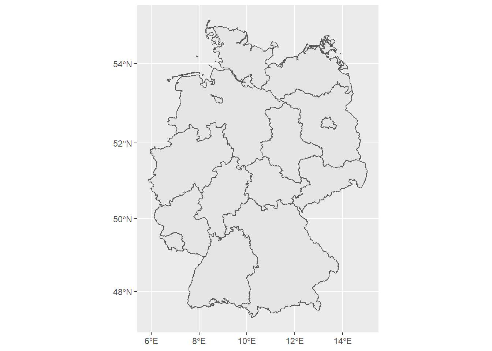
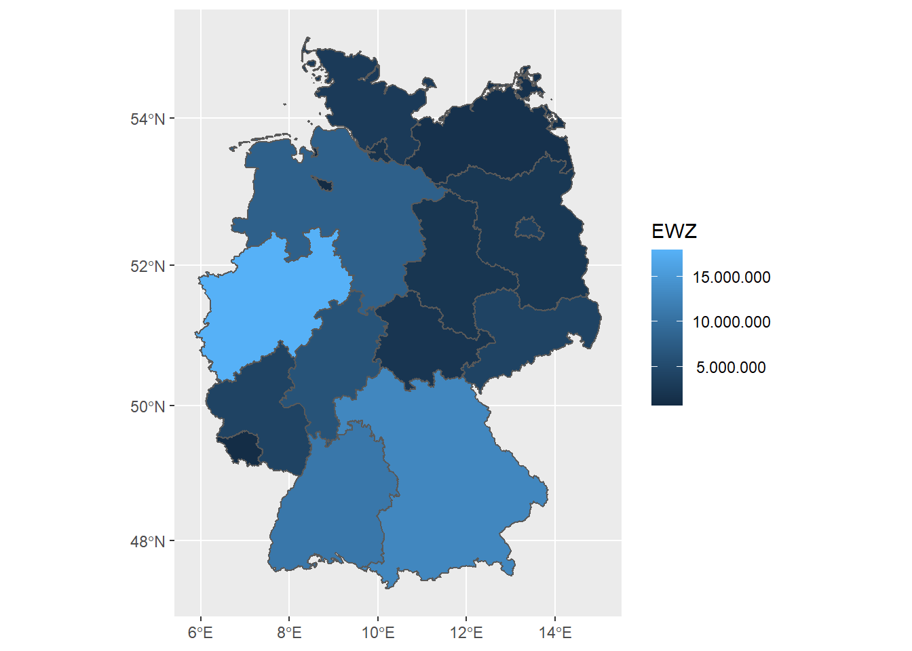
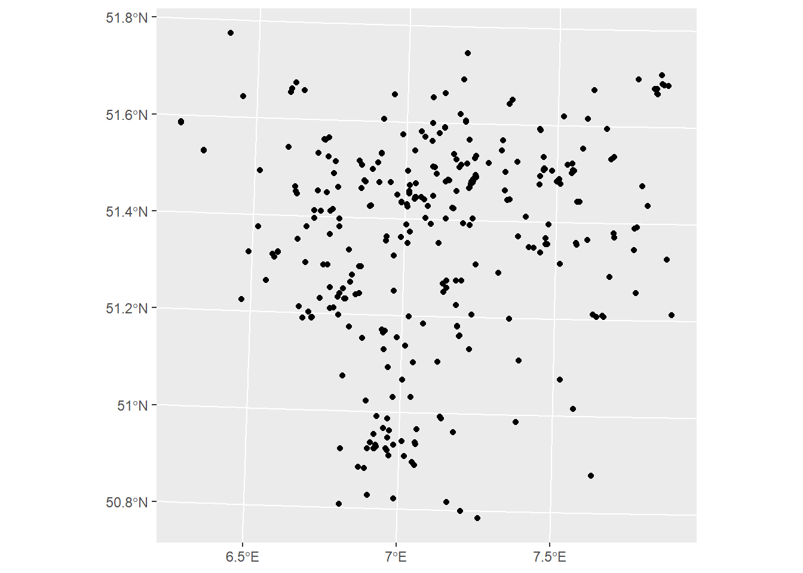
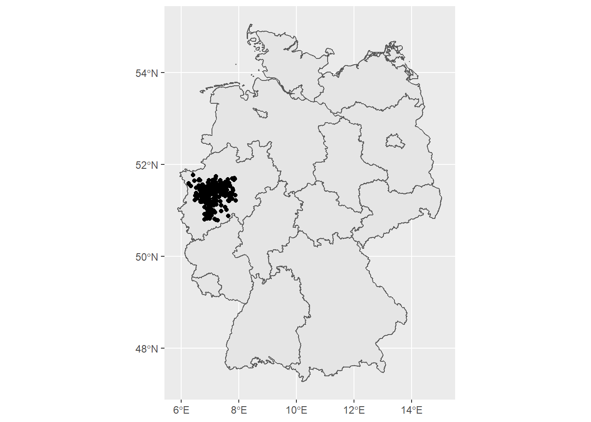

Geodaten und Karten in R
Ziele der Sitzung
- Visualisierung von räumlichen Daten
- Erstellen von Karten im printfähigen Format
Geodaten leicht gemacht
Die Visualisierung von simplen Geoinformationen unterscheidet sich nicht wesentlich von der Visualisierung anderer Daten. Bei Punktdaten im zweidimensionalen Raum bedarf es beispielsweise eines x-Wertes und eines y-Wertes, um diesen zu visualisieren. Übertragen auf die Erdkugel bedarf es eines Längen- und Breitengrades. Hinzu kommt eine Projektion vgl. z.B. Mercator-Projektion.
Geodaten werden in vielerlei Formen bereitgestellt. Zu den häufig verwendeten gehört das Shapefile-Format von ESRI. In der .shp-Datei sind die Geometriedaten gespeichert. Eine Shapefile ist jedoch keine einzelne Datei, sonder besteht aus mindestens drei einzelnen Dateien, die im selben Ordner gespeichert werden sollten.
In der sozialwissenschaftlichen und ökonomischen Forschung werden in der Regel entweder Polygone oder Punktdaten visualisiert.
Zum Einlesen von Shapefiles nutzen wir das Paket sf. Mit st_read lesen wir ein Shapefile ein.
#Quelle Shapefile Bundesländer: https://opendata-esri-de.opendata.arcgis.com/datasets/esri-de-content::bundesl%C3%A4nder-2016-mit-einwohnerzahl?geometry=-31.360%2C46.270%2C52.268%2C55.886
library(tidyverse)
library(sf)
bundeslaender <- st_read("daten_beispiele/shapefiles_bundeslaender/Bundesländer_2016_ew.shp")## Reading layer `Bundesländer_2016_ew' from data source `C:\Users\amertens\IW-R-Kurs\daten_beispiele\shapefiles_bundeslaender\Bundesländer_2016_ew.shp' using driver `ESRI Shapefile'
## Simple feature collection with 16 features and 21 fields
## geometry type: MULTIPOLYGON
## dimension: XY
## bbox: xmin: 653028 ymin: 5986277 xmax: 1674447 ymax: 7373205
## projected CRS: WGS 84 / Pseudo-MercatorBeim Einlesen eines Shapefiles werden bereits wichtige Informationen zum Geometrietyp und der Projektion angezeigt.
#Visualisierung von Geodaten Eine einfache, der Syntax von ggplot2 folgende Visualisierung von Geodaten kann mit dem geom_sf erreicht werden. Als aesthetic wird eine geometry benötigt. In diesem Fall heißt die entsprechende Spalte im Datensatz ebenfalls geometry.
bundeslaender %>%
ggplot(aes(geometry = geometry)) +
geom_sf()
Sollen die Polygone, in diesem Fall Bundesländer mit einem Farbwert, der auf einer Variabel basiert, gefüllt werden, so geschieht dies mit der fill-aesthetic. Der Datensatz enthält eine Spalte EWZ mit der Einwohnerzahl je Bundesland.
bundeslaender %>%
ggplot(aes(geometry = geometry, fill = EWZ)) +
geom_sf() +
scale_fill_continuous(labels = function(x) format(x, big.mark = ".", decimal.mark = ",", scientific = FALSE)) #verhindert Exponentialnotation und stellt auf deutsche Kommas um
Das Schichtprinzip von ggplot2, nachdem einer Abbildung mit + weitere Schichten hinzugefügt werden können funktioniert bei der Visualisierung von Geodaten ebenfalls.
Hier muss jedoch zusätzlich darauf geachtet werden, dass die verschiedenen Informationen, die übereinander dargestellt werden in derselben Projektion gespeichert wurden.
Wir laden zunächst ein neues Shapefile, das Standorte von Krankenhäusern im Ruhrgebiet enthält. Die Daten zu Krankenhäusern stammen aus dieser Quelle: GovData
krankenhaeuser <- st_read("daten_beispiele/krankenhaeuser_ruhr/poi_krankenhaeuser.shp")## Reading layer `poi_krankenhaeuser' from data source `C:\Users\amertens\IW-R-Kurs\daten_beispiele\krankenhaeuser_ruhr\poi_krankenhaeuser.shp' using driver `ESRI Shapefile'
## Simple feature collection with 554 features and 44 fields
## geometry type: POINT
## dimension: XY
## bbox: xmin: 309435.8 ymin: 5627418 xmax: 422184.5 ymax: 5739012
## projected CRS: ETRS89 / UTM zone 32NDie Visualisierung der Punktdaten unterscheidet sich in der Syntax nicht von der von Polygonen.
krankenhaeuser %>%
ggplot(aes(geometry = geometry)) +
geom_sf()
Eine Darstellung der Punktdaten ohne eine Grundkarte macht wenig Sinn. Wo liegen die Punkte? Um die Grundkarte der Bundesländer und die Standorte der Krankenhäuser gemeinsam darzustellen, überprüfen wir zunächst, ob diese dieselbe Projektion haben.
Ein Vergleich der beiden Projektionen zeigt, dass diese nicht identisch sind*:
waldo::compare(bundeslaender %>% sf::st_crs(), krankenhaeuser %>% sf::st_crs())## `old$input`: "WGS 84 / Pseudo-Mercator"
## `new$input`: "ETRS89 / UTM zone 32N"
##
## lines(old$wkt[[1]])[1:21] vs lines(new$wkt[[1]])[1:24]
## - "PROJCRS[\"WGS 84 / Pseudo-Mercator\","
## + "PROJCRS[\"ETRS89 / UTM zone 32N\","
## - " BASEGEOGCRS[\"WGS 84\","
## + " BASEGEOGCRS[\"ETRS89\","
## - " DATUM[\"World Geodetic System 1984\","
## + " DATUM[\"European Terrestrial Reference System 1989\","
## - " ELLIPSOID[\"WGS 84\",6378137,298.257223563,"
## + " ELLIPSOID[\"GRS 1980\",6378137,298.257222101,"
## " LENGTHUNIT[\"metre\",1]]],"
## " PRIMEM[\"Greenwich\",0,"
## and 14 more ...
##
## lines(old$wkt[[1]])[22:35] vs lines(new$wkt[[1]])[25:38]
## " LENGTHUNIT[\"metre\",1],"
## " ID[\"EPSG\",8807]]],"
## " CS[Cartesian,2],"
## - " AXIS[\"easting (X)\",east,"
## + " AXIS[\"(E)\",east,"
## " ORDER[1],"
## " LENGTHUNIT[\"metre\",1]],"
## - " AXIS[\"northing (Y)\",north,"
## + " AXIS[\"(N)\",north,"
## " ORDER[2],"
## and 4 more ...*Anmerkung: Unterschiede sind nicht immer leicht zu erkennen und manchmal unterscheiden sich auch nur die Bezeichnungen (vgl. UTM-Koordinatensystem)
Das Paket sf bietet eine Vielzahl an Funktionen, um mit Geoinformationen zu arbeiten. Die Funktion st_transform erlaubt uns die Projektionen zu ändern.
bundeslaender_wgs84 <- bundeslaender %>%
st_transform(crs = 4326)krankenhaeuser_wgs84 <- krankenhaeuser %>%
st_transform(crs = 4326)Nun haben die beiden Datensätze dieselbe Projektion…
waldo::compare(bundeslaender_wgs84 %>% sf::st_crs(), krankenhaeuser_wgs84 %>% sf::st_crs())## v No differences…und wir können sie gemeinsam grafisch darstellen:
ggplot() +
geom_sf(data = bundeslaender_wgs84, aes(geometry = geometry)) +
geom_sf(data = krankenhaeuser_wgs84, aes(geometry = geometry))
Die Krankenhäuser liegen allesamt im Ruhrgebiet. Es könnte also sinnvoll sein, die Hintergrundkarte auf Nordrhein-Westfalen zu beschränken. Man kann Datensätze auch innerhalb eines ggplot-geoms filtern:
ggplot() +
geom_sf(data = bundeslaender_wgs84 %>%
filter(GEN == "Nordrhein-Westfalen"), aes(geometry = geometry)) +
geom_sf(data = krankenhaeuser_wgs84, aes(geometry = geometry))
Der Krankenhäuser-Datensatz bietet Informationen zu den verschiedenen Typen der Krankenhäuser in der Variable coll_name. Wie sind die verschiedenen Krankenhaustypen geografisch verteilt?
Zunächst untersuchen wir, wie viele Krankenhaustypen es gibt und wie viele Krankenhäuser dem jeweiligen Typ angehören.
krankenhaeuser_wgs84 %>%
as_tibble() %>% #von sf-Objekt in tibble umwandeln
count(coll_name) %>%
arrange(desc(n))## # A tibble: 23 x 2
## coll_name n
## <chr> <int>
## 1 Krankenhäuser Allgemein 231
## 2 Fachklinik 38
## 3 Psychiatrie 33
## 4 Innere Medizin 32
## 5 Orthopädie 25
## 6 Kardiologie 22
## 7 Geriatrie 18
## 8 Gynäkologie 17
## 9 Chirurgie 16
## 10 Neurologie 13
## # ... with 13 more rowsAuf der Suche nach einem der 18 Krankenhäuser für Geriatrie im Ruhrgebiet? Natürlich, sind wir doch alle. Wo sind diese zu finden? Die Filterfunktionen innerhalb der ggplot-Befehle sind insbesondere für die schnelle Datenvisualisierung praktisch. Wir weisen der Farbe einen Indikator zu, der TRUE ist, wenn da Krankenhaus geriatrische Behandlungen anbietet und FALSE falls dem nicht so ist.
ggplot() +
geom_sf(data = bundeslaender_wgs84 %>%
filter(GEN == "Nordrhein-Westfalen"), aes(geometry = geometry)) +
geom_sf(data = krankenhaeuser_wgs84, aes(geometry = geometry, color = coll_name %in% c("Geriatrie")))
Weiterführende Links: